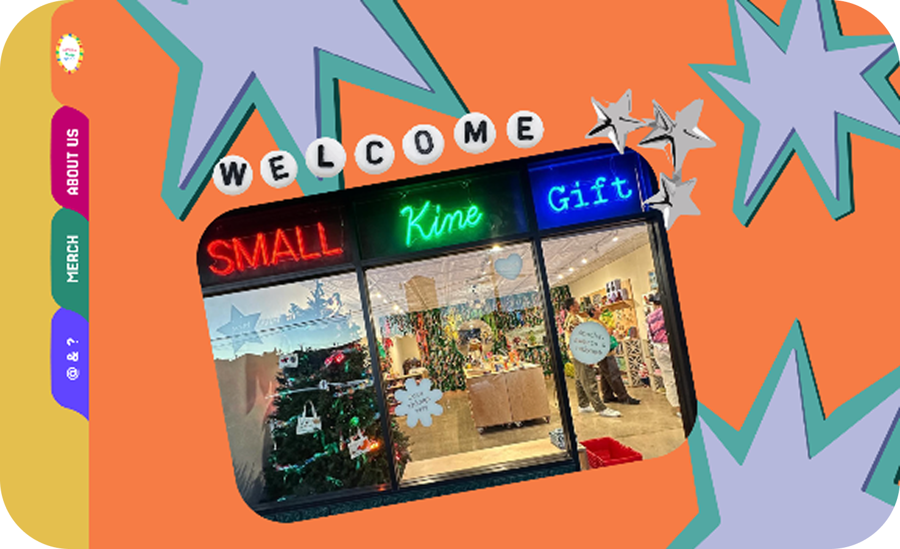

SMALL KINE GIFT WEBSITE
In our ART249 and ART258 class, we got to choose our own website to contruct whether it be from existing ones or building from scratch. The website I chose was from an existing one that is from an existing store called "Small Kine Gift".
Small Kine Gift is a charming boutique in Kaimukī, Honolulu, offering a playful mix of locally inspired goods, design-forward items, and quirky novelties. They have a current website that is functional however, it doesn’t capture the essence of the store itself. The curated design is going against cleanliness and more so leaning to a maximalist aesthetic but also touching into practicality for UI purposes.
I started by compiling the moodboards and I went with 3 different directions until I settled with the final one. While doing that I also started collecting assets such as .pngs and other images that best represent the store itself to piece the prototype together with the help of illustrator for the graphics and Photoshop for the image resolutions.
I went over two rounds of wireframes; trying to find a concept that embodies 'Small Kine Gift' and so I was inspired with the previous moodboards as well as the use of analog items and decided on a folder-type navigation and a scroll up-and-down.
Figma Prototyping
I did my initial prototyping in Figma and have trial and error with the UI design since my main feature was wanting to implement the folder-type design where if you click through it would scroll to its respective section.
With much decisions to make, I decided on merging Round One and Round Two which resulted into the current implemented interface, still using Figma for the final prototype before heading on to coding it.
Click the image below for the final Figma file!
